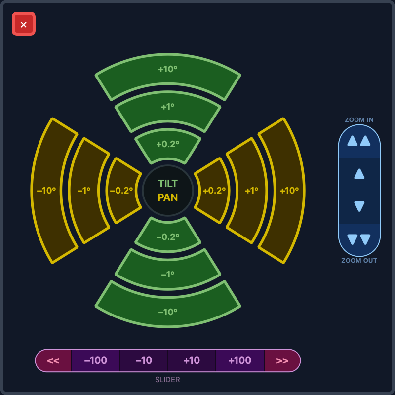

PC app
The full controller: joystick jogging, the position grid, look-at calibration, CV tracking and diagnostics.
The PC app is the most complete way to drive the rig. It's a PyQt6 application (Windows, macOS, Linux) that connects to the hub over WiFi or USB and gives you everything in one window.
Install & run
cd pc_app
python3 -m pip install -r requirements.txt
python3 main.pyPython 3.11+ is recommended. The requirements cover the core app plus CV tracking (OpenCV and the YOLO model). See CV tracking for the tracking-specific packages.
Connecting
Open Config → Hub Connection and pick one:
| Mode | When to use | Setting |
|---|---|---|
| WiFi TCP | Production — PC joined to the
hub PTS- WiFi | Hub IP 192.168.4.1, port
7777 |
| USB Serial | Bench / development — PC cabled to the hub | Pick the serial port |
192.168.4.1. Join the hub's PTS-
network, then point the app there on port 7777.The main window
Once connected, the five cameras come alive as they report in. From here you can:
- Jog with a game controller or the on-screen controls — smooth expo curves make both fine and fast moves controllable. The joystick deadzone is adjustable in Config.
- Work the position grid — ten slots per camera with live borders. Store, recall and clear shots (Storing & recalling shots).
- Set the active speed presets with the on-screen dials.
- Run the look-at calibration wizard and moves (Look-at tracking).
- Open CV tracking — optical-flow or YOLO — while you ride the slider and zoom (CV tracking).
- Name cameras and positions (Camera & position names).
- Manage pairing in Config → Paired Mounts — view the hub's table, forget a mount, and resolve same-number conflicts (Pairing & identity).

The Move panel
Press Move in the top bar for a floating panel of precise, repeatable steps — the control for framing a shot by a known amount rather than by feel. It works on whichever camera is active, and pressing Move again (or the red ✕) closes it.

Pan and tilt — the dial
Up and down are tilt, left and right are
pan, and the hub says so rather than leaving you to work it
out. The step grows outward: 0.2° nearest the centre, then
1°, then 10° on the outside. One press, one step.
Zoom — press and hold
The column on the right runs while held rather than stepping: outer zones are fast, inner zones slow, and releasing stops it. Up is in, down is out, and the captions say which is which — the arrows give a direction but not an axis. On a mount with LANC zoom this drives the camera's own zoom motor instead of a stepper; the control is the same.
Slider — the track
Four tap zones for discrete steps — −100, −10,
+10, +100 mm — with a run to each end of the
rail at the outsides.
| Control | What it does |
|---|---|
−10 / +10 etc. | Moves the carriage by that many millimetres, at the active slider speed preset. |
<< / >> | Runs the carriage all the way to that end of the rail. It stops at the usable limit, not against the end stop — see End margin. |
What it does not show
There is no position readout. The mount answers when asked where it is, but it does not volunteer it — that unsolicited stream was removed deliberately to keep the radio quiet — so a live readout here would mean the panel polling for one. The numbers you need are on the dial and the track: they say what a press will do, which is the question you are asking when the panel is open.
The panel sizes itself from the screen, like the grid and the bars, so it looks the same on a 1080p laptop and a 4K console.
Diagnostics & health
Every node in the system — Teensys, bridges, hub, console — reports heap, worst loop time, link failures and reset cause into the PC app's log every 10 seconds, with an extra report the moment something jumps. Slow leaks and radio degradation show up hours before they'd become a symptom. See Troubleshooting for reading them.
OSC — the hub's, not the app's
The PC app does not run an OSC server. The
OSC surface is the hub's, on
192.168.4.1:9700, and Companion or QLab talk to it directly —
so the rig answers whether or not this app is running.
What the app does do is report what the hub's OSC is doing — where feedback is being sent and how many messages went out — in the log, so a Companion page that has stopped updating can be told from one that was never being fed. See Troubleshooting.
Develop with no hardware
You don't need a rig to run the app. Start the simulator and point the app at
127.0.0.1:
python3 tools/mount_sim.pyIt speaks the real protocol as a hub plus five mounts, with a fault-injection console. See Building the firmware.
Prefer a phone? See the Web app.